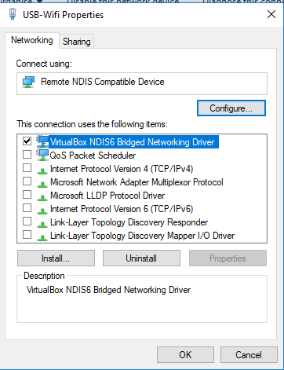

So I have two connections on my pc, one Wifi (Will be used for Host) and one wired USB internet(only for quest), I can set it up to work on other VMS but not with whonix gateway.
To alow the VM to get connection I changed it to Virtual Host-Only adapter in the VM Virtual box settings which is then bridged to USB WIFI Adapter.
Also another way is to change settings of the VM in virtual box and select the USB Wifi adapter under bridge adapters.
I assume Whonix has a check on it to see if the VM setting is sat to “NAT”
Is there way to change this? I believe there must be a setting I must change in Whonix since this setup works for other VMS
** Note **
On the adapter properties I have unchecked everything except VirtualBox NDIS6 Bridged Networking Driver.
This is to stop Windows from using the connection.

Thanks Devs